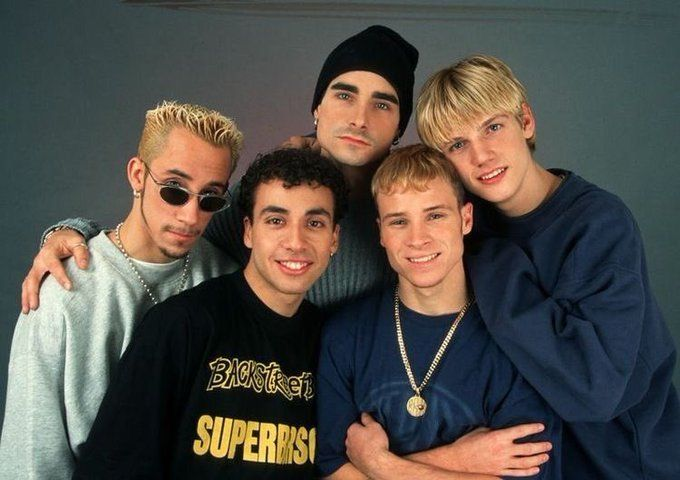
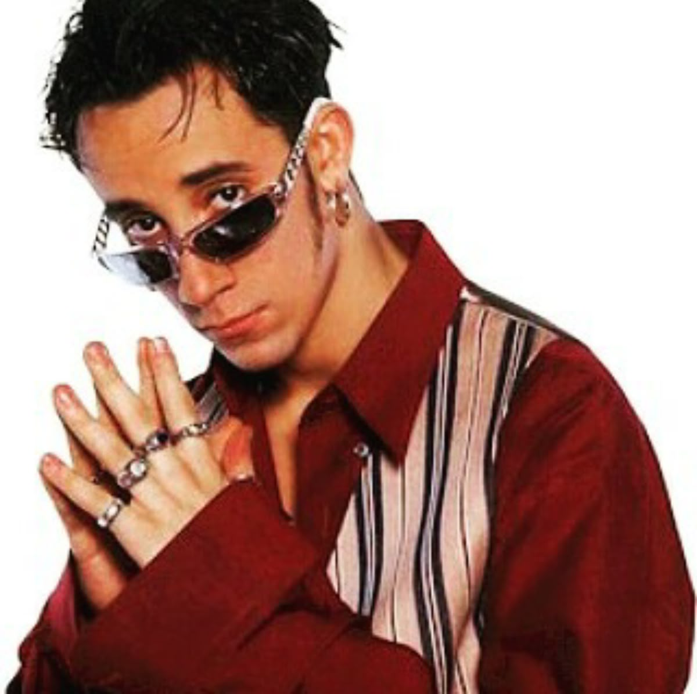
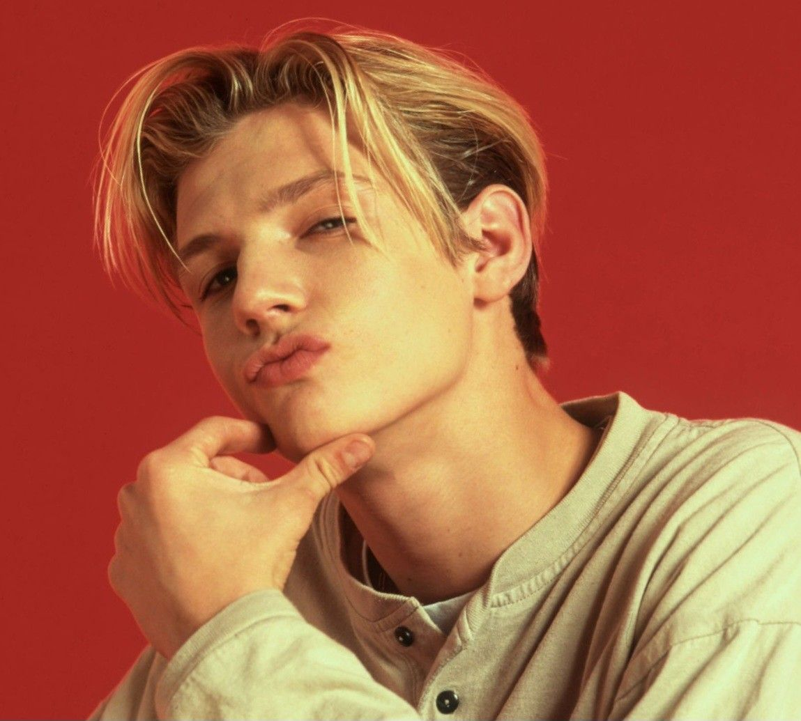
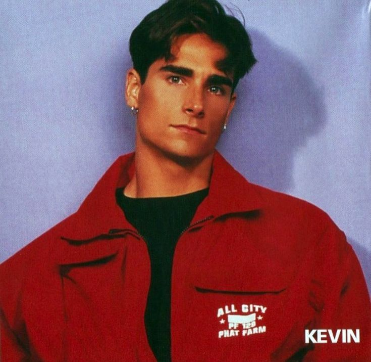

Meet the Band
According to Genius, The Backstreet Boys are the most successful boy band in history, having sold over 130 million records worldwide, and with their first nine albums reaching the top 10 on the Billboard 200. The band rose to stardom with the release of their third album, Millenium, in the year 1999, with their most memorable song being "I want it that way". Ever since then, the band cemented itself in history as one of the most successful boy bands in history.
Meet the Band Members

AJ McLean
He is a founding member of the vocal and is also one of the vocalists for the group, Backstreet Boys. McLean is also a contributor to the "It Gets Better Project." He was born on January 9, 1978 in West Palm Beach, California. He was an only child, and he was raised by his mother and grandparents as his parents divorced when he was only 2 years old.

Nick Carter
Nickolas Gene Carter is also an American singer and a lead vocalist of the vocal group Backstreet Boys. He was born on January 28, 1980, and has three siblings. He was born in Jamestown, New York, where his parents, wned a bar called the Yankee Rebel in Westfield, New York.

Kevin Richardson
Kevin Scott Richardson, American pop singer, best known as a member of the vocal group the Backstreet Boys. He was born on October 3, 1971 in Lexington, Kentucky. He has two older brothers, and his cousin is his fellow bandmate, Brian Littrell, and he grew up in a 10 acre farm with his Family.

Brian Littrell
An American singer, songwriter, and actor, best known as a member of the Backstreet Boys. He is also a CCM singer and released a solo album, Welcome Home, in 2006. He was born on Februaru 20, 1975 in Lexington, Kentucky, he has one older brother and is related to one of his bandmates, Kevin Richardson, He also grew up religious in a Baptist Family.

Howie Dorough
iHoward Dwaine Dorough, also known as Howie D, is an American singer and actor. He is a member of the pop vocal group Backstreet Boys. He was born in August 22, 1973 in Orlando, Florida, where he also met his fellow bandmember, AJ Mclean. He has 5 siblings and he is the youngest by 10 years.